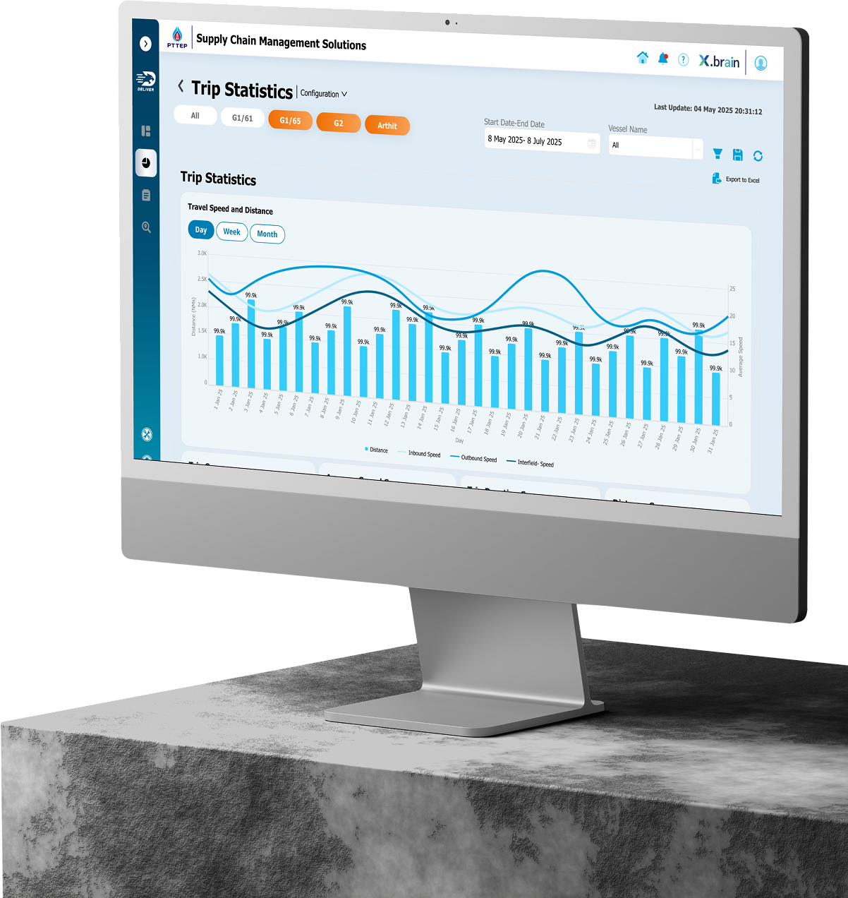
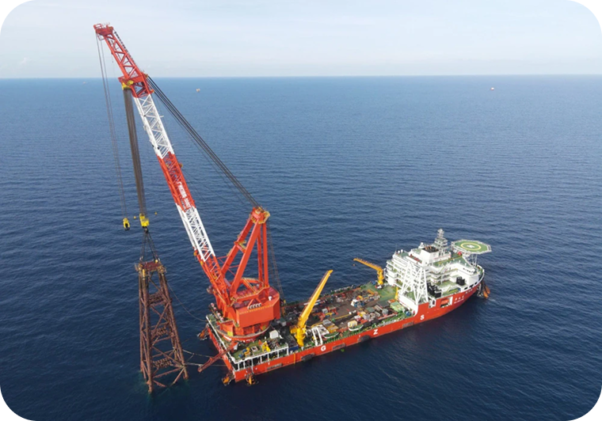
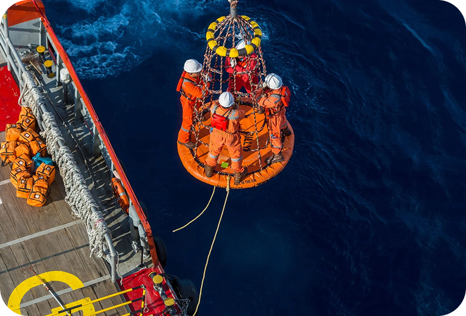
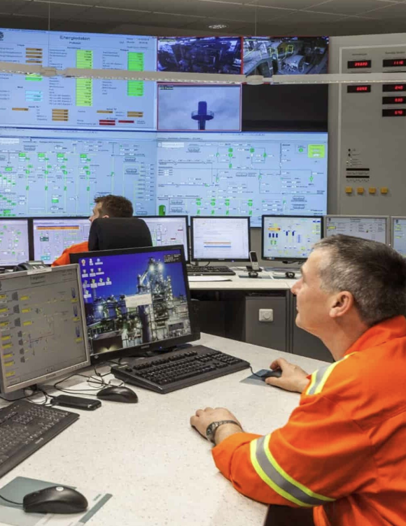
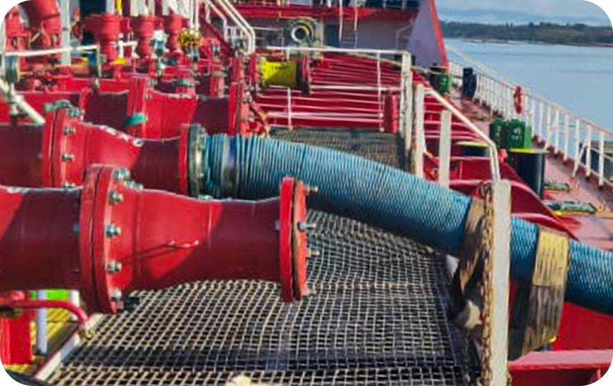
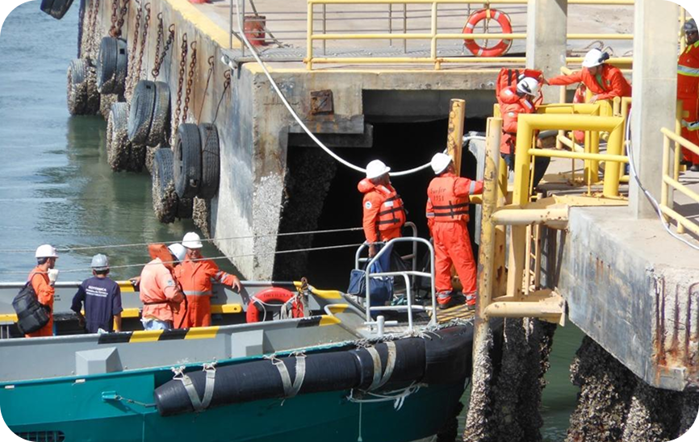
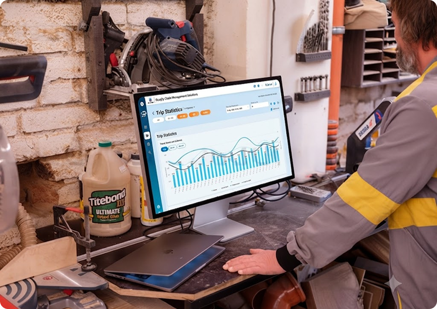

Vessel Route Optimization, Cargo & Fuel (MGO) Tracking, Passenger Scheduling, and Multi-leg Transit Planning.

PTTEP Marine
Vessel Route Optimization, Cargo & Fuel (MGO) Tracking, Passenger Scheduling, Multi-leg Transit Planning
Internal Marine Operations, Fleet Managers, and Offshore Personnel
To streamline complex offshore supply chain operations by transforming manual, fragmented coordination into a centralized, data-driven management platform.

Coordinate vessels, crews, and cargo between offshore buoys with real-time visibility and optimized route planning.

Safely coordinate and monitor offshore crew rotations and basket transfers between vessels and installations.
Conducting day-trip inspections for safety compliance, structural checks, and Offshore supply chain.

Delivery delays across offshore routes impacting operational timelines.
Low visibility into workforce status and personnel tracking across platforms.
Low vessel utilization rates resulting in unnecessary fuel expenditures.
Limited visibility into Marine Gas Oil (MGO) consumption and trip execution led to fuel fraud and untracked fuel loss.

Disconnected passenger scheduling and vessel allocation resulted in underutilized trips and increased offshore operating costs.

Monitor MGO usage and PT/NPT performance in real time to uncover inefficiencies and improve operational decisions.

Optimize multi-leg routes with real-time seat availability for maximum fleet efficiency.
Digitized manual planning workflows, reducing repetitive coordination and improving scheduling accuracy across offshore operations.
Enabled operators to quickly interpret complex fleet data through structured information architecture and high-density dashboards.
Introduced validation logic for complex routing scenarios, helping prevent planning errors before execution.